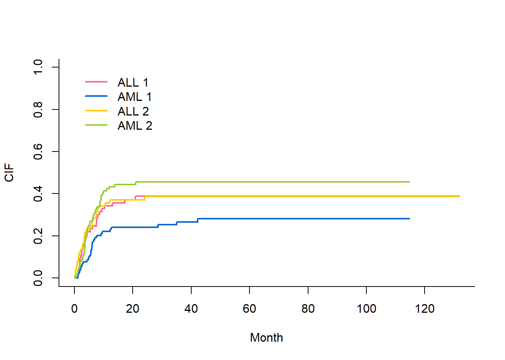

Chapter 14 竞争风险模型
14.1 竞争风险的概念
➢ 在观察某事件发生的时间，如果该事件被其他事件阻碍，即存在竞争风险
➢ 【举例】：研究骨髓移植对比血液移植治疗白血病的疗效，结局定义为“复发”，假定患者移植后不幸因为移植不良反应死亡，那这些发生移植相关死亡的患者就无法观察到“复发”的终点，也就是说“移植相关死亡”与“复发”存在竞争风险。
➢ 恶性肿瘤预后研究中这种例子很常见。
14.2 单因素竞争风险模型
1. 载入数据，并且将“D-疾病”这一列转化为因子变量
library(foreign)
bmt <-read.csv('data/bmtcrr.csv')
head(bmt)## Sex D Phase Age Status Source ftime
## 1 M ALL Relapse 48 2 BM+PB 0.67
## 2 F AML CR2 23 1 BM+PB 9.50
## 3 M ALL CR3 7 0 BM+PB 131.77
## 4 F ALL CR2 26 2 BM+PB 24.03
## 5 F ALL CR2 36 2 BM+PB 1.47
## 6 M ALL Relapse 17 2 BM+PB 2.23bmt$D <- as.factor(bmt$D)- 加载程辑包，未下载的包可以使用
install.package()下载。
library(survival)
library(cmprsk)
library(splines)
3. 使用cuminc()函数拟合模型
attach(bmt)## The following object is masked from breslow.dat:
##
## Agecrmod <- cuminc(ftime,Status,D)
crmod## Tests:
## stat pv df
## 1 2.8623325 0.09067592 1
## 2 0.4481279 0.50322531 1
## Estimates and Variances:
## $est
## 20 40 60 80 100 120
## ALL 1 0.3713851 0.3875571 0.3875571 0.3875571 0.3875571 0.3875571
## AML 1 0.2414530 0.2663827 0.2810390 0.2810390 0.2810390 NA
## ALL 2 0.3698630 0.3860350 0.3860350 0.3860350 0.3860350 0.3860350
## AML 2 0.4439103 0.4551473 0.4551473 0.4551473 0.4551473 NA
##
## $var
## 20 40 60 80 100 120
## ALL 1 0.003307032 0.003405375 0.003405375 0.003405375 0.003405375 0.003405375
## AML 1 0.001801156 0.001995487 0.002130835 0.002130835 0.002130835 NA
## ALL 2 0.003268852 0.003373130 0.003373130 0.003373130 0.003373130 0.003373130
## AML 2 0.002430406 0.002460425 0.002460425 0.002460425 0.002460425 NA结果解读1
$est:列出了不同分组病人在不同时间点发生结局事件(1)和竞争事件(2)的率，我们可以看到，1的发生率和2的发生率实质上并没有什么差别。
3.画图
plot(crmod,xlab = 'Month', ylab = 'CIF',lwd=2,lty=1,
col = c('#FF6699','#0066CC','#FFCC00','#99CC33'))
14.3 多因素竞争风险模型
在上部分的分析中，我们相当于只做了一个单因素的分析，如果要探讨每一种因素对“结局”的作用，可以使用crr()函数来构建一个多因素竞争风险模型。
1. 整理数据：由于crr()函数需要数据为数据框类型的数据，所以在这里我们需要重新整理一下数据。
cov1 <- data.frame(age = bmt$Age,
sex_F = ifelse(bmt$Sex=='F',1,0),
dis_AML = ifelse(bmt$D=='AML',1,0),
phase_cr1 = ifelse(bmt$Phase=='CR1',1,0),
phase_cr2 = ifelse(bmt$Phase=='CR2',1,0),
phase_cr3 = ifelse(bmt$Phase=='CR3',1,0),
source_PB = ifelse(bmt$Source=='PB',1,0))
## 手动设置哑变量
head(cov1)## age sex_F dis_AML phase_cr1 phase_cr2 phase_cr3 source_PB
## 1 48 0 0 0 0 0 0
## 2 23 1 1 0 1 0 0
## 3 7 0 0 0 0 1 0
## 4 26 1 0 0 1 0 0
## 5 36 1 0 0 1 0 0
## 6 17 0 0 0 0 0 0结果解读 2.1
我们可以看到，经过数据转换，生成了一个新的数据框
cov1，在这个数据框中，性别由“1”和“0”表示。白血病类型以及移植类型也使用“1”和“0”表示。需要注意的是，在
phase这个变量中，有四种状态，如果粗暴的将其定义为“1~4”，计算机会将其作为等级资料处理，实际上他并没有顺序，所以我们还是使用老办法将其设置为协变量。
2. 拟合模型
mod1 <- crr(bmt$ftime, bmt$Status, cov1, failcode=1, cencode=0)
summary(mod1)## Competing Risks Regression
##
## Call:
## crr(ftime = bmt$ftime, fstatus = bmt$Status, cov1 = cov1, failcode = 1,
## cencode = 0)
##
## coef exp(coef) se(coef) z p-value
## age -0.0185 0.982 0.0119 -1.554 0.1200
## sex_F -0.0352 0.965 0.2900 -0.122 0.9000
## dis_AML -0.4723 0.624 0.3054 -1.547 0.1200
## phase_cr1 -1.1018 0.332 0.3764 -2.927 0.0034
## phase_cr2 -1.0200 0.361 0.3558 -2.867 0.0041
## phase_cr3 -0.7314 0.481 0.5766 -1.268 0.2000
## source_PB 0.9211 2.512 0.5530 1.666 0.0960
##
## exp(coef) exp(-coef) 2.5% 97.5%
## age 0.982 1.019 0.959 1.005
## sex_F 0.965 1.036 0.547 1.704
## dis_AML 0.624 1.604 0.343 1.134
## phase_cr1 0.332 3.009 0.159 0.695
## phase_cr2 0.361 2.773 0.180 0.724
## phase_cr3 0.481 2.078 0.155 1.490
## source_PB 2.512 0.398 0.850 7.426
##
## Num. cases = 177
## Pseudo Log-likelihood = -267
## Pseudo likelihood ratio test = 24.4 on 7 df,结果解读 2.2
这个模型的结果展示和COX回归模型十分相似。我们可以看到每个不同因素的显著性，以及他们的 exp(coef)即HR值。
在这个模型中，phase_cr1、phase_cr2是有意义的，由于这是我们设置的phase这个变量对应的哑变量，所以我们可以说phase这个变量对结果是有意义的。
以source_PB为例，它的exp(coef)=2.512，说明控制了移植相关死亡的竞争风险之后，接受PB这种骨髓移植方式的病人发生定义的终点（复发）的风险比接受BM+PB这种方式发生终点的风险高2.512倍。
3. 我们可以做一个卡方（瓦尔德）检验，看看拟合的模型是否有意义
- 由于只有phase一个变量有意义，所以我们只纳入数据框的4~6列，也就是phase_cr1、phase_cr2以及phase_cr3。
library(aod)##
## 载入程辑包：'aod'## The following object is masked from 'package:survival':
##
## ratswald.test(mod1$var,mod1$coef,Terms = 4:6)## Wald test:
## ----------
##
## Chi-squared test:
## X2 = 14.0, df = 3, P(> X2) = 0.0029结果解读2.3
- 我们可以看到这个模型和空模型比较，p=0.0029，说明是有意义的。